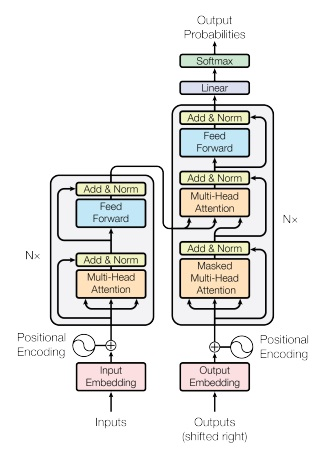
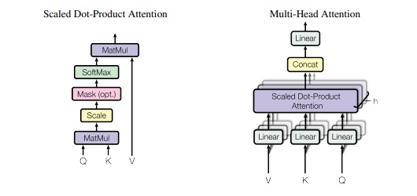
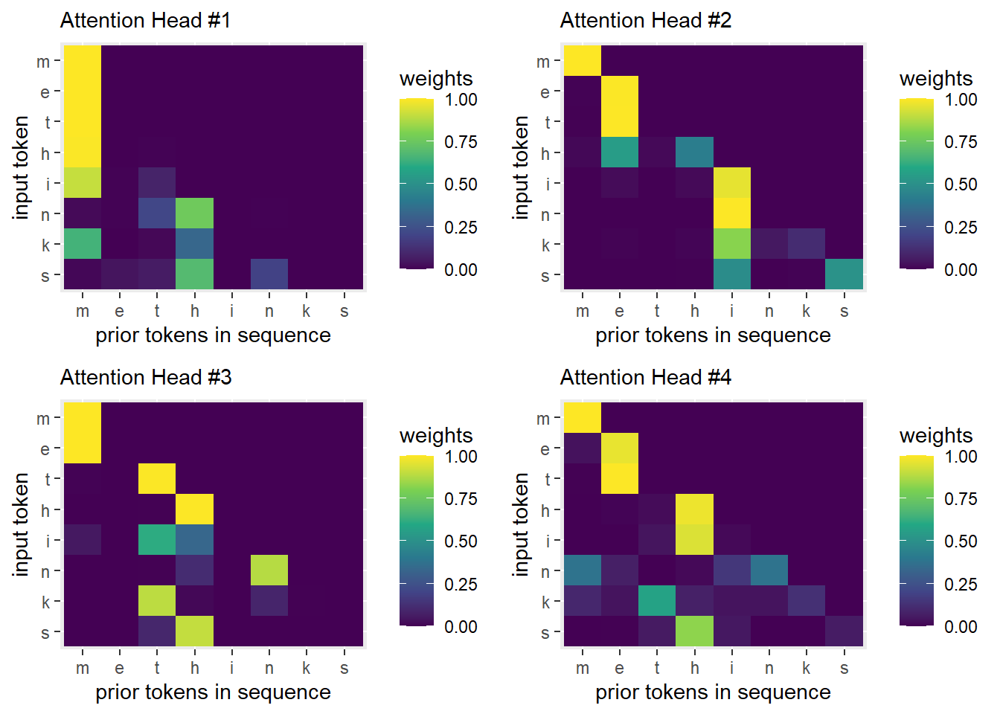

An exercise in understanding the mechanics of the transformer architechture used in Large Language Models (LLMs)
Intro/Overview
One of the core components in AI models like ChatGPT is a language model. These language models are usually focused on predicting the next token in a sequence, and are used to generate language. For example, if the tokens are characters then given the sequence “orang” the model should predict the next character is “e”. One of the major innovations for these models is the attention mechanism introduced by Vaswani, Ashish, et al.(2017) in their paper “Attention is all you need”. This model architecture is called a transformer, and is what is used in the GPT (Generative Pre-trained Transformer) models in ChatGPT.

In the following work, I will be implementing the transformer architecture from scratch in base R. The figure above has both encoder and decoder blocks as it is the architecture used for translation tasks, but I will only be implementing the decoder block on the right part of the figure without the encoder block embedding section, since that is not necessary for the next token prediction task.
My work heavily references this YouTube video from Andrej Karpathy, as well as his related minGPT github project. Karpathy is well known for developing and teaching the first deep learning course at Stanford, CS 231n: Convolutional Neural Networks for Visual Recognition. His materials break down the core mechanics of the transformer model architecture using the pytorch library in Python. My implementation will differ by being built in R (which I am more familiar with than Python) as well as not relying on any libraries and implementing the backpropogation from scratch. This will make it slower and less efficient than Karpathy’s implementation which relies on the pytorch library to handle the backpropogation, but will help improve my understanding of the full process.
Full disclosure, around 80% of the content in the code blocks was constructed with assistance from an AI model: Google’s Gemini 2.5 flash. I have implemented feed forward neural network models before, but this example is more complex than the proof of concepts I usually work on and Gemini was very helpful in figuring out how to structure the various functions and pass parameter information back and forth between them.
Setting Up
Data Preparation
Since the intention is to follow Karpathy’s example it makes the most sense to use the same dataset, which is a text file containing the complete works of William Shakespeare. The original file can be found on the Project Gutenberg website, but the file Karpathy uses is much cleaner so it is easier to use his file directly.
# text corpustext_corpus =readLines("input.txt")
Warning in readLines("input.txt"): incomplete final line found on 'input.txt'
text_corpus =paste(text_corpus, collapse ="\n")# Create a vocabulary of unique characterschars =sort(unique(strsplit(text_corpus, "")[[1]]))vocab_size =length(chars)# Create a mapping from character to integer (stoi: string_to_int)stoi =setNames(1:vocab_size, chars)# Create a mapping from integer to character (itos: int_to_string)itos =setNames(chars, 1:vocab_size)# Helper functions for encoding and decodingencode =function(s) {sapply(strsplit(s, "")[[1]], function(char) stoi[[char]])}decode =function(l) {paste(sapply(l, function(idx) itos[[as.character(idx)]]), collapse ="")}cat("Vocabulary size:", vocab_size, "\n")
Vocabulary size: 65
cat("Character to index mapping (first 5):", paste(names(head(stoi, 5)), head(stoi, 5), sep =":", collapse =", "), "\n")
Character to index mapping (first 5): ':1, -:2, :3,
:4, !:5
cat("Example encoding of 'hello':", encode("hello"), "\n")
Usually in a transformer model, one layer of multi-headed attention will be followed by one feed forward layer, and that will constitute one transformer block. Then there will be multiple transformer blocks in sequence that make up the model. In this example, only a single transformer block will be used for simplicity, since keeping track of all the parameters for the gradient update is already complex, even for only one block.
block_size =8# how many characters we consider for predictionn_embd =16# embedding dimension, also model dimension (d_model)n_head =4# number of attention headshead_size = n_embd / n_head # dimension of each attention headlearning_rate =0.01n_iter =100000# number of training iterations (more needed for real performance)dropout_rate =0.10# Dropout probability (e.g., 0.10 means 10% of neurons dropped)gradient_clip_threshold =1.0# Gradient clipping threshold# Batch size is 1 for simplicity in this from-scratch example.
Training and Validation Split
The data is split into 90% training data and 10% validation data. One important note is that the first 90% of the file is used as training while the last 10% is used for validation, there is no random sampling in creating this partition.
This is a deliberate choice due to the autoregressive nature of this model, if we used simple random sampling to make this split, we could lose the independence between training and validation by training on very similar data to what would exist in validation. As a simple example, let’s pretend we have a context window of 5 characters and the word “incredible” is in the dataset. We could end up with a case like this:
input: “incr”, target: “e”, split: training
input: “ncre”, target: “d”, split: validation
input: “cred”, target: “i”, split: training
The problem in this case is that the model has already been trained on most of that string already, so when it sees it in validation the performance will look similar to performance on the training set because the data is similar, and not because the model is actually generalizing well.
These are helper functions that handle things like the softmax operation, neuron activation, dropout, etc. Most operations are being applied to matrix objects and we want the output to also be a matrix. There are a lot of scenarios where base R functions want to simplify the data type of the output and may try to return a vector or something else when the input was a matrix, so the matrix() function is used heavily here to ensure the output is still a matrix object.
Layer Normalization
I struggled a lot with the implementation of layer normalization, so it is worth adding some additional explanation here around some aspects I found confusing.
Let’s assume the input data to LayerNorm is \(X \in R^{N \times D}\), where each row \(X_i \in R^D\) is a sample. LayerNorm operates independently on each sample, so for an example of the forward pass we drop the batch index \(i\) while focusing on a single vector \(x \in R^D\).
The \(y_j\) elements are the output of LayerNorm. An important observation is that the third line above shows the normalization, which is happening over the rows of \(X\). Note how the first two lines calculating \(\mu\) and \(\sigma^2\) are over the dimension of the columns \(D\), so each row has its own mean and variance and is being normalized. However, the affine transformation in the fourth line shows parameters \(\gamma_j\) and \(\beta_j\) with the index \(j\) over the column space, so this last transformation is a scale and shift over the columns.
I also had trouble understanding the backward pass for LayerNorm. The gradients for \(\gamma\) and \(\beta\) are fairly straightforward since they are just an affine transformation at the end, but passing the gradient back through to the input data was tricky, and this difference between transformations over rows vs columns complicates things somewhat.
Backward Pass:
We want \(\frac{dL}{dx_j}\), the gradient for the input row data.
where \(k\) is a summation index (over columns) we are introducing to iterate over the columns, while \(j\) is the specific column index of the individual element within the row vector \(x\) that we are differentiating with respect to.
This has two dependencies, one directly through \(x_k\) as each element of \(x_k\) is \(x_j\) when \(k=j\), and also indirectly through \(\mu\) and \(\sigma^2\) which are functions of \(x_j\).
Finally, we can plug this back into the first equation for the gradient we are after. To simplify the notation slightly, we will say \(\frac{dL}{d\hat{x_k}} = \hat{g_k}\)
If you look at the layer norm backward function implemented below, you can see that the above formula is what is used to calculate the gradient d_X.
# Softmax activation function (row-wise for matrices)softmax_matrix_rows =function(X) {t(apply(X, 1, function(row) { exp_row =exp(row -max(row)) # Numerical stabilityreturn(exp_row /sum(exp_row)) })) # wrapped with t() to transpose back to original shape}# Layer Normalizationlayer_norm_forward =function(X, gamma, beta, epsilon =1e-5) { mean_X =apply(X, 1, mean) var_X =apply(X, 1, var) X_norm = (X -matrix(mean_X, nrow =nrow(X), ncol =ncol(X), byrow =FALSE)) /sqrt(matrix(var_X + epsilon, nrow =nrow(X), ncol =ncol(X), byrow =FALSE)) out = X_norm *matrix(gamma, nrow =nrow(X), ncol =ncol(X), byrow =TRUE) +matrix(beta, nrow =nrow(X), ncol =ncol(X), byrow =TRUE)return(list(out = out, X_norm = X_norm, mean_X = mean_X, var_X = var_X, X = X)) # Store X for backward}layer_norm_backward =function(dout, X, X_norm, mean_X, var_X, gamma, epsilon =1e-5) { N =nrow(X) # Number of samples (batch size) D =ncol(X) # Number of features (embedding dimension)# Gradients for gamma and beta dgamma =colSums(dout * X_norm) dbeta =colSums(dout)# Gradient of X_norm d_X_norm = dout *matrix(gamma, nrow = N, ncol = D, byrow =TRUE) std_inv =1/sqrt(var_X + epsilon) # (N,) std_inv_mat =matrix(std_inv, nrow = N, ncol = D)# Sum over features (columns) for each row d_X_norm_sum =rowSums(d_X_norm) # shape (N,) d_X_norm_dot_Xnorm =rowSums(d_X_norm * X_norm) # shape (N,) term1 = d_X_norm term2 =matrix(d_X_norm_sum / D, nrow = N, ncol = D) term3 = X_norm *matrix(d_X_norm_dot_Xnorm / D, nrow = N, ncol = D) d_X = (term1 - term2 - term3) * std_inv_matreturn(list(d_X = d_X, dgamma = dgamma, dbeta = dbeta))}# ReLU activation functionrelu =function(x) {matrix(pmax(0, x), nrow =nrow(x), ncol =ncol(x))}relu_grad =function(x) { (x >0) *1}# Dropout layerdropout_forward =function(x, dropout_rate, is_training) {if (is_training) { mask =matrix(runif(nrow(x)*ncol(x)), nrow =nrow(x), ncol =ncol(x)) > dropout_rate out = x * mask / (1- dropout_rate) # Scale up during trainingreturn(list(out = out, mask = mask)) } else {return(list(out = x, mask =NULL)) # No dropout during inference }}dropout_backward =function(dout, mask, dropout_rate) {# Apply the same mask and scaling to the gradientreturn(dout * mask / (1- dropout_rate))}# He Initialization function for weightshe_init_weights =function(fan_in, fan_out, ReLU_activation =FALSE) {# Only account for halving the variance if ReLU actiavtion is being appliedif(ReLU_activation){ std_dev =sqrt(2/ fan_in) }else{ std_dev =sqrt(1/ fan_in) } weights =matrix(rnorm(fan_in * fan_out, mean =0, sd = std_dev),nrow = fan_in, ncol = fan_out)return(weights)}# Gradient Clipping function (by global norm)clip_gradients_by_norm =function(gradients_list, clip_threshold) {# Flatten all gradients into a single vector to calculate the norm all_grad_elements =c()for (grad_name innames(gradients_list)) { all_grad_elements =c(all_grad_elements, as.vector(gradients_list[[grad_name]])) } global_norm =sqrt(sum(all_grad_elements^2))# If the global norm exceeds the threshold, scale all gradientsif (global_norm > clip_threshold) { scale_factor = clip_threshold / global_norm clipped_gradients =lapply(gradients_list, function(grad_matrix) { grad_matrix * scale_factor })return(clipped_gradients) } else {# No clipping neededreturn(gradients_list) }}
Model Parameters Initialization
Many of the parameters will be initialized using He initialization. He initialization (also known as Kaiming initialization) is a weight initialization technique widely used in deep neural networks, especially when using Rectified Linear Unit (ReLU) as the activation function which we are doing here. The weights are determined like this:
\[
W = N(0, \sigma^2) \text{ where } \sigma = \sqrt{\frac{2}{n_{in}}}
\]
The basic idea is to choose starting weights that won’t immediately cause problems with vanishing or exploding gradients. We want to keep the variance of activations and gradients consistent as we move forward and backward through the layers in the network. Consider the simple feed forward layer as follows:
For simplicity, let’s assume the biases b are initialized to zero (which is common and is what we are doing here) and that the elements of x and W are independent and have zero mean.
ReLU is defined as f(y)=max(0,y). This means that for y<0, the output is 0, and for y>=0, the output is y. When initialized, roughly half of the inputs to a ReLU neuron will be negative (resulting in zero output) and half will be positive (resulting in the input value). This effectively halves the variance compared to a linear activation function.
We want the variance of the output a to be roughly equal to the variance of the input x.
Consider the variance of y=Wx:
\[
var(y) = var(\sum_{i=1}^{n_{in}} W_i x_i)
\]
Assuming \(W_i\) and \(x_i\) are independent and have zero mean:
\[
var(y) = \sum_{i=1}^{n_{in}} var(W_i)var(x_i)
\] Assuming all \(W_i\) and \(x_i\) are identically distributed:
\[
var(y) = n_{in} var(W)var(x)
\]
Now, for ReLU, a=max(0,y). If y has zero mean and is symmetric around zero, then roughly half of the values of y will be positive and half will be negative. The negative values become zero, effectively reducing the variance by half. So, for the output after ReLU:
Remember the objective: We want the variance of the output a to be roughly equal to the variance of the input x. So we substitute \(var(x)\) for \(var(a)\) in this last equation, solving for the variance in weights \(W\) that achieve the desired outcome.
Most layers don’t have activation functions applied, so we only double the variance in the He initialization for the layer where the ReLU activation is used. In other cases, the same logic applies, just without the need to double the variance.
set.seed(42) # For reproducibility# Character Embeddings - typically not He-initialized, using uniformC =matrix(runif(vocab_size * n_embd, -1, 1), nrow = vocab_size, ncol = n_embd)# Positional Embeddings - typically not He-initialized (often fixed or small random)P_emb =matrix(runif(block_size * n_embd, -1, 1), nrow = block_size, ncol = n_embd)# Multi-Head Attention Parameters (using He Initialization)# For Wq, Wk, Wv, fan_in is n_embdWq =he_init_weights(n_embd, n_head * head_size)Wk =he_init_weights(n_embd, n_head * head_size)Wv =he_init_weights(n_embd, n_head * head_size)# For Wo, fan_in is n_head * head_sizeWo =he_init_weights(n_head * head_size, n_embd)# LayerNorm for Attention - gamma initialized to 1s, beta to 0sln1_gamma =rep(1, n_embd)ln1_beta =rep(0, n_embd)# Feed-Forward Network Parameters (using He Initialization)# For W_ff1, fan_in is n_embdW_ff1 =he_init_weights(n_embd, 4* n_embd, ReLU_activation =TRUE)b_ff1 =rep(0, 4* n_embd) # Biases are kept at 0# For W_ff2, fan_in is 4 * n_embdW_ff2 =he_init_weights(4* n_embd, n_embd)b_ff2 =rep(0, n_embd) # Biases are kept at 0# LayerNorm for FF - gamma initialized to 1s, beta to 0sln2_gamma =rep(1, n_embd)ln2_beta =rep(0, n_embd)# Final linear layer to logits (using He Initialization)# For W_final, fan_in is n_embdW_final =he_init_weights(n_embd, vocab_size)b_final =rep(0, vocab_size) # Biases are kept at 0# Store all parameters in a list for easier managementparams =list(C = C, P_emb = P_emb,Wq = Wq, Wk = Wk, Wv = Wv, Wo = Wo,ln1_gamma = ln1_gamma, ln1_beta = ln1_beta,W_ff1 = W_ff1, b_ff1 = b_ff1, W_ff2 = W_ff2, b_ff2 = b_ff2,ln2_gamma = ln2_gamma, ln2_beta = ln2_beta,W_final = W_final, b_final = b_final)cat("Parameters initialized.\n")
Parameters initialized.
Transformer Block Implementation Functions
Multi-Head Self-Attention
The self-attention mechanism helps the model learn weights associated with prior tokens in the sequence. It could actually look forward as well if allowed to do so, like when translation is the desired function, but usually for next token prediction the attention mechanism is restricted to only look backwards at previous tokens. This is handled through the “is_causal” parameter in the function below, which will set the weights for any future token positions to zero during the softmax step.
The multi-headed piece of the mechanism is basically because multiple “heads” of the attention mechanism are run in parallel, and then the output is joined together in a final linear layer at the end. This lets the model learn more than one way to pay attention to previous tokens, if that is beneficial for the prediction.
This mechanism is summarized in figure 2 of Vaswani, Ashish, et al.(2017), reproduced here:

The key equation from that paper which we are implementing here is:
\[
\text{Attention}(Q, K, V) = \text{softmax}(\frac{QK^T}{\sqrt{d_k}}) V
\]
The softmax function produces weights which are what determine how much attention is paid to previous tokens, while the V matrix contains the values emitted by those previous tokens.
This is a fully connected feed forward neural network with a single hidden layer. An activation function (ReLU in this case) is applied to the hidden layer. The hidden layer is 4 times the size of the input and output layers in this implementation, but there is no strong reason that needs to be the case. This image shows a common visualization for how this type of network looks.
W1 and W2 are the weight matrices into and out of the hidden layer.
b1 and b2 are the bias vectors.
f is the activation function (e.g., ReLU).
a is the activated output of the hidden layer.
y is the linear output after activation.
In the visualization above, the rows of x are the nodes on the left, they become the nodes a in the center after the first transformation, and then become the output y after the second transformation.
Given that the transformations are all linear and the activation function ReLU(x) = max(x, 0) is simple to work with, the implementation is fairly straightforward.
This function puts together all the pieces we’ve built previously to get a single forward pass for the full model. It starts by getting the token embeddings for the input data (from the C matrix parameter) and adding the position embedding parameter data. This feeds into the single transformer block for this model (one layer of multi-headed self-attention, followed by a feed forward neural network with a single hidden layer). Then finally one last linear layer which converts the inputs into probabilities over the vocabulary space.
transformer_forward =function(X_batch, y_batch, params, dropout_rate, is_training) {# 1. Input and Positional Embeddings x_emb =t(sapply(1:block_size, function(j) params$C[X_batch[1, j], ])) x = x_emb + params$P_emb# Dropout after combined embeddings embed_dropout_out =dropout_forward(x, dropout_rate, is_training) x = embed_dropout_out$out# Transformer Block attn_out_cache =multi_head_attention_forward(x, params$Wq, params$Wk, params$Wv, params$Wo, n_head, head_size, params$ln1_gamma, params$ln1_beta, dropout_rate, is_training) x = attn_out_cache$out ff_out_cache =feed_forward_forward(x, params$W_ff1, params$b_ff1, params$W_ff2, params$b_ff2, params$ln2_gamma, params$ln2_beta, dropout_rate, is_training) x = ff_out_cache$out# Final linear layer to get logits for all tokens in the sequence logits = x %*% params$W_final +matrix(params$b_final, nrow = block_size, ncol = vocab_size, byrow =TRUE)# Softmax to get probabilities probs =softmax_matrix_rows(logits)# Select the probability of the true token for each entry in the flattened batch y_batch_flat =as.vector(t(y_batch)) indices =cbind(1:length(y_batch_flat), y_batch_flat) correct_probs = probs[indices]# Compute Negative Log Likelihood / Cross-Entropy token_losses =-log(correct_probs) loss =mean(token_losses)return(list(logits = logits, probs = probs, loss = loss,x_emb = x_emb,embed_dropout_mask = embed_dropout_out$mask,attn_cache = attn_out_cache,ff_cache = ff_out_cache,last_x_output = x ))}
Transformer Model Backward Pass
This function puts together all the pieces we’ve built previously to get a single backward pass for the full model, producing gradients for all the parameters. It works backwards from the final output of probabilities, computing gradients for each of the model parameters and the associated data, and passing the gradient for the input data back to each prior step along the series of model transformations.
This is where we train the model by picking one example sequence of tokens at a time (batch size is 1 in this implementation), calculating the loss, and updating the model parameters with their calculated gradients. Gradient clipping is applied here as a preventative measure to address the potential for the exploding gradient problem. Training and validation loss are printed out after every 10000 training examples. Training loss is very noisy since it is calculated on only one training example at a time, as compared to validation loss which is calculated over the full validation dataset.
# Training loopfor (iter in1:n_iter) {# --- Training Step ---# Sample a random training example idx_train =sample(1:nrow(X_train), 1) X_batch_train =matrix(X_train[idx_train, ], nrow =1) y_batch_train =matrix(y_train[idx_train, ], nrow =1)# Forward pass (training mode) cache_train =transformer_forward(X_batch_train, y_batch_train, params, dropout_rate, is_training =TRUE) loss_train = cache_train$loss# Backward pass grads =transformer_backward(cache_train, X_batch_train, y_batch_train, params, dropout_rate)# Apply Gradient Clipping clipped_grads =clip_gradients_by_norm(grads, gradient_clip_threshold)# clipped_grads = grads # or not# Update parameters using clipped gradientsfor (p_name innames(params)) {# Check if a gradient for this parameter exists in clipped_grads grad_name =paste0("d_", p_name)if (!is.null(clipped_grads[[grad_name]])) { params[[p_name]] = params[[p_name]] - learning_rate * clipped_grads[[grad_name]] } else {# This case should ideally not be hit if `grads` contains all corresponding `d_` parameters# but included for robustness if `params` has entries not tracked by `grads`cat("Warning: No gradient found for parameter:", p_name, "\n") } }# --- Validation Step ---if (iter %%10000==0) {# Calculate validation loss (inference mode, no dropout) val_losses =c()if (nrow(X_val) >0) { # Check if validation set is not emptyfor (val_idx in1:nrow(X_val)) { X_batch_val =matrix(X_val[val_idx, ], nrow =1) y_batch_val =matrix(y_val[val_idx, ], nrow =1) cache_val =transformer_forward(X_batch_val, y_batch_val, params, dropout_rate, is_training =FALSE) val_losses =c(val_losses, cache_val$loss) } avg_val_loss =mean(val_losses)cat("Iteration:", iter, " Training Loss:", round(loss_train, 4), " Validation Loss:", round(avg_val_loss, 4), "\n") } else {cat("Iteration:", iter, " Training Loss:", round(loss_train, 4), " (No validation data)\n") } }}
Iteration: 10000 Training Loss: 3.6363 Validation Loss: 3.1276
Iteration: 20000 Training Loss: 3.2004 Validation Loss: 3.0208
Iteration: 30000 Training Loss: 2.7591 Validation Loss: 2.9624
Iteration: 40000 Training Loss: 2.0192 Validation Loss: 2.906
Iteration: 50000 Training Loss: 3.4338 Validation Loss: 2.8703
Iteration: 60000 Training Loss: 3.1453 Validation Loss: 2.8311
Iteration: 70000 Training Loss: 3.7388 Validation Loss: 2.8091
Iteration: 80000 Training Loss: 2.8175 Validation Loss: 2.7793
Iteration: 90000 Training Loss: 3.1989 Validation Loss: 2.7818
Iteration: 100000 Training Loss: 2.6022 Validation Loss: 2.7582
cat("\nTraining complete. Final Training Loss:", round(loss_train, 4), "\n")
Training complete. Final Training Loss: 2.6022
if (nrow(X_val) >0) {cat("Final Average Validation Loss:", round(avg_val_loss, 4), "\n")}
Final Average Validation Loss: 2.7582
Generating New Text
The text generation function will run in inference mode (is_training = FALSE) to ensure no dropout is applied. It can be fed a starting sequence, or will pad with blank spaces if the sequence is shorter than expected or empty. It generates output similar to what it is trained on, so even if the starting sequence is very different from the training content, the output will still look like the training content. In this case, the model was trained on Shakespeare, so the output will look like Shakespeare even if the generation is seeded with text that looks very different from Shakespeare.
generate_text =function(current_params, start_string, num_characters_to_generate) { generated_sequence_indices =encode(start_string)if (length(generated_sequence_indices) < block_size) { padded_start =c(rep(stoi[[" "]], block_size -length(generated_sequence_indices)), generated_sequence_indices) generated_sequence_indices = padded_startcat("Padded start string to block_size with spaces: '", decode(padded_start), "'\n", sep ="") }for (i in1:num_characters_to_generate) { context_indices =tail(generated_sequence_indices, block_size) X_predict =matrix(context_indices, nrow =1)# Simplified forward pass for inference (is_training = FALSE) x_emb_infer =t(sapply(1:block_size, function(j) current_params$C[X_predict[1, j], ])) x_infer = x_emb_infer + current_params$P_emb# No dropout applied during inference (dropout_forward handles this) x_infer =dropout_forward(x_infer, dropout_rate, is_training =FALSE)$out attn_out_infer =multi_head_attention_forward(x_infer, current_params$Wq, current_params$Wk, current_params$Wv, current_params$Wo, n_head, head_size, current_params$ln1_gamma, current_params$ln1_beta, dropout_rate, is_training =FALSE)$out x_infer = attn_out_infer ff_out_infer =feed_forward_forward(x_infer, current_params$W_ff1, current_params$b_ff1, current_params$W_ff2, current_params$b_ff2, current_params$ln2_gamma, current_params$ln2_beta, dropout_rate, is_training =FALSE)$out x_infer = ff_out_infer# Final linear layer to get logits for the *last* token in the sequence last_token_output_infer =matrix(x_infer[block_size, ], nrow =1) logits_infer = last_token_output_infer %*% current_params$W_final +matrix(current_params$b_final, nrow =1, ncol = vocab_size) probs_infer =softmax_matrix_rows(logits_infer) next_char_idx =sample.int(vocab_size, 1, prob = probs_infer) generated_sequence_indices =c(generated_sequence_indices, next_char_idx) }return(decode(generated_sequence_indices))}# Example usage: Generate new characters starting with a given stringstart_seq ="Charizard is my favorite Pokemon."num_to_generate =1000generated_text =generate_text(params, start_seq, num_to_generate)cat("\nGenerated text starting with '", start_seq, "':\n", generated_text, "\n", sep ="")
Generated text starting with 'Charizard is my favorite Pokemon.':
Charizard is my favorite Pokemon.B
S
Ahed,
Oshe un bekoy tirde n min, w m s ta ktwicorrfandon, tal uorlee
N
T
Wls tiitind vsiw R
Be f girun y ifrovh woln
Le w
F tiuns n cthen ins, geou tonrda nd congr hen mpe-rle aromisono, telsd
As adinen sseq wGicwp AhRO
RAe'.
Eite,
Thaloncis i'f- tind rgre tht theedis vrrtas, g ld ether,
Finl'd
UAh:Sli?AhnE
SArah
HHck T a,,
Wirw ale.od alr id r wRI-eatien'tathethyinrir,anvuthy,
Wil bdo an fe m.
Aig,
N:
Aa!Nloue bu ounacsin frlaag.dg, apeitconeoomeyertaond,
Heobellup sow? thasivr memongoosy kld onDimcy wur tthot n ead lvecon d-,
YUd
WOJn dgouin moe.UdAhoITiit ulvin wesir cper nod.
SGiv
Ty s y I eEQI geth kranye irorldetVOoathye'ot th ns aonofras tes cathpen,:
Aif.
CBs iulokega tou vShoylryheyerrertino, che capyy t. douus,
Yss ,
G p nndendev
Qouerego kirourehet fy fe do srhe ri sas, wnduldeaali y bloiy g souronths, le.
Gos IAuthe, g net:
IUSG!asot'ril bl,, IB wiworaf ple pesove ewe uran intes winof; b'roningl kesrk,.
Oingerodom? bisdthilan t:unl vAee
Fe kd:
IAare IOeae whou
We can see that while the language is not correct, the model is producing text structured very similarly to the input Shakespeare text. The validation loss achieved here is worse than what Karpathy achieves in his implementation, but this is due to the choice to simplify several aspects of the model (batch size of 1, only a single transformer block instead of 3 or 4 in sequence) to make it easier to implement everything from scratch and keep the matrices 2-dimensional for easier manual inspection in RStudio’s global environment.
There are a number of improvements than could be made to this implementation. The most obvious ones are having a batch size greater than 1, and including multiple transformer blocks in sequence instead of just 1. Optimizing the weighting scheme in the gradient update to decay the learning rate or use some other algorithm like the Adam optimizer would also be a good choice. The reason this output doesn’t look as impressive as ChatGPT comes down to the complexity of the model. In this implementation, the count of final model parameters is 5489, which is very small in comparison to the count of 1.5 billion parameters in GPT-2 or 175 billion parameters in GPT-3.
Attention Plot
After training the model, there are a number of interesting visualizations we can create. One is an attention plot, where we pick an input sequence and show how the attention layer creates weights to pay attention to prior tokens over that sequence. We can examine the input sequence “methinks” which is a word that exists commonly in the input Shakespeare text. At this point, we will call a couple of libraries just for the plotting functionality.
library(tidyr)library(ggplot2)library(gridExtra)attn_sequence =encode("methinks")X_predict =matrix(attn_sequence, nrow =1)# Token and positional embeddingx_emb_infer =t(sapply(1:block_size, function(j) params$C[X_predict[1, j], ]))x_infer = x_emb_infer + params$P_emb# Layer normalizationln_out_x =layer_norm_forward(x_infer, params$ln1_gamma, params$ln1_beta)x = ln_out_x$out# Attention blockQ_all = x %*% WqK_all = x %*% Wkplots_per_head =lapply(1:n_head, function(h) { start_col = (h -1) * head_size +1 end_col = h * head_size Q_h = Q_all[, start_col:end_col] K_h = K_all[, start_col:end_col] scores = (Q_h %*%t(K_h)) /sqrt(head_size) mask_causal =upper.tri(matrix(0, nrow(scores), ncol(scores)), diag =FALSE) scores[mask_causal] =-Inf attention_weights =softmax_matrix_rows(scores)# make plot df =as.data.frame(attention_weights)colnames(df) =c("m","e","t","h","i","n","k","s") df$row =c("m","e","t","h","i","n","k","s") df = tidyr::pivot_longer(df, -row, names_to ="col", values_to ="val") df$row =factor(df$row, levels =rev(c("m","e","t","h","i","n","k","s"))) df$col =factor(df$col, levels =c("m","e","t","h","i","n","k","s")) p =ggplot(df, aes(x = col, y = row, fill = val)) +geom_tile() +scale_fill_viridis_c() +labs(x ="prior tokens in sequence", y ="input token",fill ="weights", title =paste0("Attention Head #", h)) +theme(plot.title =element_text(size =11))# Return plot object to list outputreturn(p)})# Display plots in 2x2 gridgrid.arrange(grobs = plots_per_head, ncol =2)

# Save plot for thumbnailg =arrangeGrob(grobs = plots_per_head, ncol =2)ggsave(file ="thumbnail.jpg", g, width =6, height =6/1.618)
Each of the four attention heads generates different weights during the self-attention process. The first token always gets a 100% weight since there are no other tokens at that point, but for later tokens we can see that the model has learned to pay attention (give higher weights to) tokens that are further back in the sequence, and which prior tokens are highly weighted differs from one attention head to the next, so they are providing meaningfully distinct information.
Conclusion
While implementing everything from scratch without relying on any packages adds significant complexity to this model, it offers a detailed understanding of the core transformer architecture. The process of implementing some of this core functionality led to a deeper understanding of how and why certain calculations are what they are (See derivations in earlier sections regarding He initialization and Layer Normalization). This example serves as an educational tool for delving into the fundamental mechanisms of attention, normalization, and regularization within deep learning models, all without external dependencies.